Dress Up reports · ^du_report(6) · 2026-10-18 · about Messed Up Dress Up, a game made with M and N · after ^du_report(5)
Then and now
How do Messed Up Dress Up, and the way it is being made, compare with the adventure-game engines and editors of the late 1980s and early 1990s (Sierra's AGI and SCI, LucasArts' SCUMM, and the Hugo games): what did they have that we have again, what made their making hard, which of those difficulties we meet again now, and which of ours are new? The game at 0.0.232; written from the sources listed at the end, and from the game's code and history (^ticket(295)).
- The machinery is the same, found again. A picture with invisible layers behind it: one saying what stands in front of what (Sierra's priority screen, in 12 bands; our objects, each with a depth) and one saying where one may walk (Sierra's control lines and control image, SCUMM's walk boxes; our collision boxes and back line). We came to each piece from M's and N's requests, not from the old engines.
- Our pictures are drawings in code, as AGI's were, not paintings scanned in as SCI1's were from 1990. So every part of a picture can be a setting and an object: placed, hidden, found by 🔬 Inspection.
- Their editors stood beside a compiled game; ours are the game. SCUMM's FLEM placed objects in rooms and MMUCUS spared scripters a rebuild; 🏞️ Background and 🗺️ World design change the picture the player is in, and a release is live in a minute: 232 versions since 2026-10-12.
- Of their eleven hard problems we meet 9 again. Memory and disks have become the browser's painting on slow computers; ports to the Amiga and the Mac have become differences between browsers (today's trap doors swung in Chrome and not in Firefox).
- New to our time: the designers are the players, the programmer works from their words in minutes, the game is its own editor, nothing is installed, and the game is a prototype for Hazel's livelits.
- Against Hugo's House of Horrors (1990): on par in the feel of moving through drawn places, ahead in making your own; behind in everything that made it a game: a goal, things to carry, puzzles, people who talk. What next is about that.
The same layers, then and now


Figure 1. Messed Up Dress Up 0.0.203, from the picture archive's run of 2026-10-18 09:49 MDT (pictures since then add moss, boulder levers and lids). For Sierra's own visible and priority screens, see the AGI Wiki's pictures [2] [4]: they are not ours to copy.
Figure 2. The layers behind a picture: Sierra's, as the AGI and SCI documentation describes them [1] [5], and Dress Up's. Drawn for this report.
The engines and their editors
| engine | what it drew, and how | how you played | its tools | sources |
|---|---|---|---|---|
| AGI Sierra On-Line, 1984 to 1989 | Pictures stored as drawing commands (lines and fills), replayed onto a visible screen and an invisible priority screen at once; the priority screen in 12 bands (colours 4 to 15) saying what is in front, and control lines (colours 0 to 3, black a wall) saying where one may walk. 16 colours. | A typed parser | In-house tools; today's fans draw AGI pictures with Lance Ewing's PicEdit, whose priority view shows the bands and lines | [1] [2] [3] |
| SCI0, SCI1 Sierra On-Line, 1988; SCI1 from King's Quest V, 1990 | SCI0 kept the vector pictures (320 by 190) and the priority screen, and added a control image (white a wall). SCI1 brought 256-colour VGA and pictures painted by hand and scanned in, with an icon interface. King's Quest V wanted 640 KB of memory and 1.2 MB floppy disks; a 16-colour edition was made for weaker PCs. | Typed (SCI0); icons and pointing (SCI1) | In-house picture, view and room tools | [5] [7] [6] |
| SCUMM Lucasfilm Games and LucasArts, 1987 (Maniac Mansion, on the Commodore 64) to 1998 | A scripting language and its interpreter (SPUTM), redesigned from one game to the next (again for Indiana Jones, again from scratch for The Secret of Monkey Island). Rooms with walk boxes; iMUSE (1991), music that branches and loops at markers to follow the player. Left in 1998 for GrimE, with Lua. | Verbs and pointing; walking to a click | FLEM placed and named the objects in a room and set clipping planes; MMUCUS compiled a room and its objects into one file, so scripters could change things without rebuilding the room; SPIT for fonts; BYLE, then CYST, for animating and scaling the characters | [9] [10] [11] |
| Hugo Gray Design Associates (David P. Gray), 1990 to 1991, shareware | Hugo's House of Horrors and its sequels: a graphic adventure with a typed parser, much like Sierra's AGI games; the DOS version free to share. | A typed parser | Its own engine (called Hugo in ScummVM) | [15] [16] |
Other engines of the era, named here from memory and not checked against sources for this report: Westwood's engine for The Legend of Kyrandia, Revolution's Virtual Theatre (Lure of the Temptress, Beneath a Steel Sky), Coktel Vision's Gob engine, Adventure Soft's AGOS (Simon the Sorcerer), and, later, Adventure Game Studio (1997).
The same problems, then and now
What made these games hard to make, from the sources, and what we meet now. The last column says whether the problem came back.
| problem | then | now, in Messed Up Dress Up | |
|---|---|---|---|
| What stands in front of what | AGI's priority screen, in 12 bands, painted with the picture; SCI's priority screen | Every thing standing in a place is an object with a depth, and the friend is drawn behind whatever stands nearer than their feet (^ticket(99)); since today, what hangs on walls and lies on floors is an object too, always behind the friend (^ticket(284)) | same |
| Where one may walk | AGI's control lines; SCI's control image; SCUMM's walk boxes | Collision boxes for walls and what stands; the back line (refined in ^ticket(310)); pits and trap doors that keep the feet out | same |
| Getting there | SCUMM: walking to a click was in the point-and-click design from the start | 👆 Walk where you click (^ticket(251)) plans a path round what stands in the way; the controller on the screen; real game controllers | same |
| Rooms and what is in them | FLEM placed and named objects in a room; MMUCUS made quick changes possible without rebuilding the room | 📦 placing any thing in any place; 🔬 Inspection's list of a place's objects; 🗺️ World design's grid of places joined by their ways | same, but live |
| The pictures | AGI: drawing commands, replayed; SCI1: painted by hand and scanned (from 1990) | Drawings written as code (SVG), as AGI's were, so every part of a picture can be a setting, an object, placed or hidden; the picture archive keeps every version | AGI's way, taken further |
| Music | SCI0: a sound's samples at most 64 KB; iMUSE (1991): music that follows the player | 🎵 the music designer; the scenes' movements (swaying, flickering) kept in time with the tune's LFOs | same idea, new form |
| Slow machines | 640 KB, floppy disks, a 16-colour edition of King's Quest V for weaker PCs | 60 frames a second first (the black laptop, the iPad): a slow computer shows the places as still pictures while the friend moves (^ticket(164)); costly effects off unless switched on (⚙️ Advanced) | same |
| Many platforms | Ports to the Commodore 64, Amiga, Atari ST, Mac, FM Towns | Browsers, which differ: today's trap doors swung in Chrome and not in Firefox (^ticket(322)); computers, tablets and phones | same |
| The engine changing under the games | SCUMM rebuilt for Indiana Jones and again for Monkey Island; SCI0 to SCI1 | 232 versions in a week (0.0.1 on 2026-10-12), each live within minutes | same, much faster |
| Knowing how it all works | Much of SCUMM undocumented; new hires spent a week at "SCUMM University" | agent-instructions.md, kept in step with every change; the dashboard of tickets; this series of reports | same need, written down |
| Playtesting | Testers, then players, months later | The players are the designers: M and N try a version the afternoon they asked for it; checks run on GitHub's computers after each release | new |
What is new now
- The designers are the players. M and N ask for a thing (a moss, a boulder lever, a bubble that bursts into smaller ones), and it is in the game that afternoon. In 1990 a design was decided by a designer, built for a year, and met players on floppy disks.
- The programmer works from their words. An AI (Claude) writes the code from what Matthew relays, in plain words, and releases it; Matthew decides. The cost of trying an idea is minutes, so ideas get tried rather than argued about.
- The game is its own editor. FLEM and MMUCUS were tools beside a compiled game; 🏞️ Background and 🗺️ World design are the running game, and a change shows at once in the picture the player is in.
- Nothing to install. The game is a web page; a release is a push, live in about a minute, on any computer with a browser.
- Every thing is a thing. Since today, everything a place draws is meant to be an object you can see in 🔬 Inspection, hide and place elsewhere (
^ticket(284)); a picture's settings decide it exactly, seeds included (^ticket(274)). - It is a prototype. Dress Up is where Hazel's user-defined livelits are tried first: what works here, as the best experience when nothing stands in the way, is then built in Hazel.
Hugo, and "on par"
Matthew remembers playing Hugo in the mid 1990s: most likely Hugo's House of Horrors (1990) or a sequel [15] [16] [17]. His sense: "it feels like we are on par with that game play experience already".
| Hugo's House of Horrors (1990) | Messed Up Dress Up (0.0.232) | |
|---|---|---|
| How you play | Typing ("get key", "open door") to a parser, as in Sierra's AGI games | Pointing, walking, dragging; a game controller; no typing |
| The places | A haunted house, in EGA pictures | Houses, a castle of rooms, woods, the sea and more, drawn with depth and movement |
| A goal | Find Penelope in the house, by solving its puzzles; an ending | None yet: you dress up a friend and go where you like |
| Things you carry | An inventory, used on the puzzles | None yet |
| People | Characters in the house | Cooks, a smith, a witch, a healer, who work but do not talk |
| Making your own | No | Yes: places, things, a world, music |
On par in the feel of being somewhere drawn and moving through it, and past it in making your own. Behind it in what made it a game.
What next
- 1. Things you carry: an inventory, and using a thing on a thing (a key on a door, a bucket on a fire), the oldest machinery of these games.
- 2. Puzzles from what we have: levers, trap doors and boulders (
^ticket(323)) wired to a goal in a place ("get the crown out of the trap room"). - 3. Depth and walking, drawn: 🔬 Inspection showing a place's depths and where one may walk as Sierra's priority and control screens did, and 🏞️ Background letting a designer paint them.
- 4. People who talk: the cooks, the witch and the healer answering, the player choosing what to say.
- 5. A beginning and an end: a world with a goal and a way to finish it, set in 🗺️ World design.
- 6. Rules: small scripts ("when the friend picks up the key, open the door"), in the game first, then as Hazel livelits, as SCUMM's scripts were to its rooms.
- 7. A world to share: a world saved as a file another player can open, as shareware once passed from hand to hand.
What the sources did not say
- How SCUMM's walk boxes were drawn and stored: the sources found name them (ScummVM fixes them for the Commodore 64 Maniac Mansion) but do not describe the tools.
- Sierra's own scanning pipeline for the painted VGA backgrounds: the sources describe it only in general (a 2015 trailer; an art director's biography).
- The footnote engines above: named from memory, not checked.
How this was put together
Written on 2026-10-18 by Claude, for Matthew, from web sources (below), the game's code and its VERSIONS.md, and the dashboard's tickets. Nothing measured: this report compares designs. The pictures of Dress Up are the picture archive's; no picture of another game is copied here, only linked. The data is in data/report.json and in this page; the page is built by drivers/build.py.
- AGI Wiki: Picture Resource
- AGI Wiki: An Explanation of AGI Priority Screens
- AGI Wiki: The Making of an AGI Background Picture
- AGI Wiki: Visual vs Priority (Vortex tutorials)
- Sierra Wiki: SCI Studio Tutorial, Chapter 6, Editing Pics
- Wikipedia: Sierra Creative Interpreter
- Wikipedia: King's Quest V
- Wikipedia: Bill Davis (artist)
- Wikipedia: SCUMM
- pagetable.com: The Mansion, Technical Aspects
- Wikipedia: iMUSE
- Wikipedia: Lucasfilm Games
- Wikipedia: Monkey Island 2: LeChuck's Revenge
- Handmade Con 2015: Ron Gilbert (talk notes)
- Wikipedia: Hugo's House of Horrors
- ScummVM Wiki: Hugo's House of Horrors
- PC Gamer: Looking back at Hugo's House of Horrors